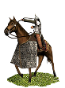
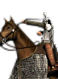

RTR: Imperium Surrectum
RTR: Imperium SurrectumArmenian Cataphract Archers


Class: missile · Category: cavalry · Men per unit: 32
Description
Cataphract archers are very heavily armoured, but slow, horse-archers that are almost impervious to attacks and can fight in close combat. They are not as armoured as cataphract lancers, yet most enemy missiles are turned aside quite easily. Mobility and speed have been sacrificed to provide protection. Their composite bows allow them to attack enemies at long range, but they also carry swords so that - if needs be - they can close up and fight hand-to-hand.
Stats
| Rank in roster | Rank in roster | Rank in roster | Rank in roster | ||||||||
|---|---|---|---|---|---|---|---|---|---|---|---|
| Men per unit | 32 | ██········ 23% | Attack | 11 | ████······ 44% | Charge bonus | 25 | ████████·· 83% | Defence | 28 | ████······ 39% |
| · armour | 14 | ████████·· 80% | · defence skill | 14 | ██········ 18% | · shield | 0 | █········· 0% | Morale | 14 | ████████·· 79% |
| Discipline | Normal | Training | Highly trained | Recruitment cost | 3,100 dn | █████████· 86% | Upkeep per turn | 1,248 dn | ██████████ 97% | ||
| Turns to recruit | 4 |
Weapons
| Primary | Secondary | Primary | Secondary | Primary | Secondary | Primary | Secondary | ||||
|---|---|---|---|---|---|---|---|---|---|---|---|
| Attack | 11 | 11 | Charge bonus | 25 | 33 | Type | missile · archery | melee · blade | Damage | piercing | piercing |
| Projectile | arrow | — | Range | 170 | — | Ammunition | 25 | — |
Defence
| Primary | Secondary | Primary | Secondary | Primary | Secondary | Primary | Secondary | ||||
|---|---|---|---|---|---|---|---|---|---|---|---|
| Total | 28 | — | Armour | 14 | — | Defence skill | 14 | — | Shield | 0 | — |
Condition and terrain
| Hit points | 1 | Mount | half armoured horse | Modifier against mounts | elephant -1 | Ground: scrub / sand / forest / snow | -4 / -1 / -7 / -1 |
| Charge distance | 40 | Formations | Square |
Technical stats
| Time between blows (primary / secondary) | 2.5 s / 2.5 s | Extra fatigue in hot climates | 2 | Spacing between men: close / loose | 2 × 4.8 m / 3.6 × 6.72 m | Default ranks | 5 |
In battle: Can form Cantabrian circle · Very good stamina
Who can recruit it
A core roster unit for 9 factions, each able to raise it anywhere they hold the right building:
Albanians · Armenia · Armenia Minor · Colchians · Commagene · Heniochi · Iberians · Mossynoeci · Sophene
Exactly what a settlement must have, route by route (2)
| Building | Also requires | Building | Also requires | ||||
|---|---|---|---|---|---|---|---|
| Direct Rule | Tier 3 Military Industrial Complex · Tier 2 Colony · Requires horses resource, if not available locally you can build Fine Horse Exports to supply it | Homeland | Tier 2 Military Industrial Complex |